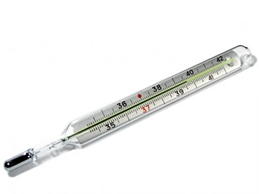
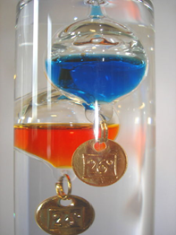
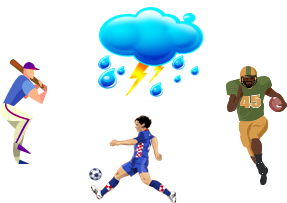
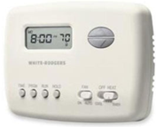
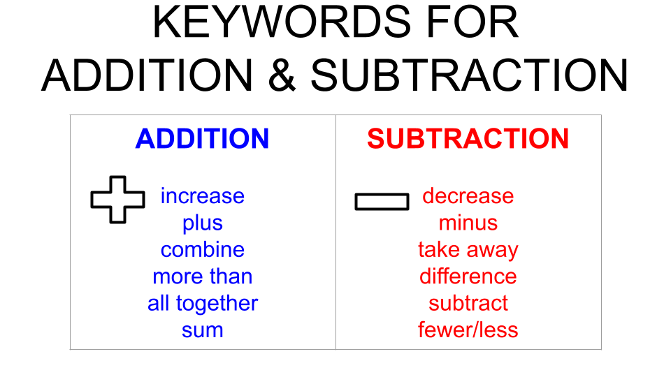

What You Should Know - Vernier Science: Measure Temperature
 Important Vocabulary
Important Vocabulary
- Algorithm - the standard steps used to solve math problems using a given operation
- Sum - the answer to an addition problem
- Difference - the answer to a subtraction problem
- Regrouping - changing the amount of groups in each place value to make addition or subtracting easier (example: 23 could be made from 2 tens and 3 ones or it could be made with 1 ten and 13 ones, or 23 ones)
- Borrowing - taking some from the next biggest place value so that you have enough to subtract (example: you “borrow” from the tens place to change 156 from 1 hundred, 5 tens, and 6 ones to 1 hundred, 4 tens, and 16 ones allowing you to take away more than 6 ones from the original number)
Measuring Temperature

We measure temperatures almost every day. This is done by using sensors called thermometers. The name comes from the Greek words thermo, meaning temperature and meter, meaning measure.
Galileo's Thermometer
Galileo, an Italian inventor, scientist, and artist invented one of the first thermometers about 400 years ago. He discovered that liquids actually expand when heated up and shrink when cooled down. His invention was the starting point for modern liquid thermometers. You have probably seen a thermometer made of a little glass tube holding a colored liquid inside. As the liquid heats up, it rises. As it cools down, it drops.
A Living Temperature Sensor
There is one very important temperature sensor that people tend to overlook.
Can you guess what it is? Here is a hint—Have you ever stuck your hand in snow? Or touched a hot plate of food?
Your skin has special nerve cells called thermoreceptors. Some of these nerve cells react to coldness, and others react to heat. Together, they are what make you sweat when you are hot and shiver when you are cold. By using these little temperature sensors, you can also avoid any really hot or really cold objects that might hurt you.
Thermistors
For this challenge, you will be measuring temperature with a type of electronic sensor called a thermistor.
A thermistor uses the flow of electricity to measure temperature. These sensors are usually found in digital thermostats in many houses that control the heater and air conditioner.
Addition
If you wanted to figure out how much altogether you have of something, you would use addition. There are many situations in math, and in the real world, that require you to add. Addition can be used to join or combine multiple groups.
When we add, the order of the numbers does not matter. For example, 2 + 3 and 3 + 2 will both give us the same answer. Even when we add larger numbers, it does not matter which number is on top.
You have added small numbers in the past using pictures, base-ten blocks, or counting on your fingers, but when the numbers get bigger there are better and faster ways to calculate how much you have. The algorithm for addition are standard steps that when followed allow you to add large numbers together.

Look at the example above.
The first step is to line up the digits by place value. You need to make sure that the smallest place value is lined up so that you are adding groups of the same size. For example, we need to add digits that represent ones together before moving onto the tens place. When adding, align the place values vertically, or up-and-down.
After lining up the place values, you can start adding. Always start with the digits furthest to the right, which is the smallest place value. In the example above, the ones place has the digits 8 and 5. 8+5=13. Since the sum of these digits is greater than 9, you will need to regroup. When you regroup in addition, you bundle 10 groups of a smaller place value together to move to the next place. The sum, which was 13, can be broken into tens and ones. The digit 3 will stay in the ones place, but the 1 (which is in the tens place) will be moved to the tens place. To keep track, you will write a small “1” above the tens column.
You are now ready to move on to the next place value, which is the tens place. Continue adding and regrouping as needed until you find the sum of the equation.
Subtraction
The opposite of addition is subtraction. When you subtract, you find the difference between two numbers. There is a standard algorithm for subtraction as well. Unlike addition, the order of the numbers matters in subtraction. When lining up your numbers to subtract, the largest overall number goes on top. For example, if we were subtracting 261 and 123, 261 is the greatest number, so it will go on top. Let us work through an example together.

After you line up your digits, you will begin subtracting in the smallest place value. Looking at our ones place in this example, you have 1-3. You cannot take 3 away from 1, so you will need to regroup. You can borrow from the next biggest place value to create enough ones to subtract. There is a 6 in the tens place. Since it is in the tens place, the 6 represents 60. You can break 60 down into 5 tens and 10 ones. To do that, cross out the 6 and change it to 5. Add 10 ones to the ones place in the top digit (in this case 1). This will change the ones place subtraction problem to 11-3. You are ready to subtract. Continue subtracting each place value until there are no more columns.
How Do We Know When to Add or Subtract?
Sometimes, it can be tricky to determine when you should add or subtract. Sometimes math is presented as a word problem or a story and you have to figure out if you should add or subtract. Keywords can help you choose which operation to use. See the keyword list below.

Career Connection and Real-World Application
Addition and Subtraction in Careers
Addition and subtraction are used in almost every career. Can you think of a time that bakers might need to add and subtract? Bakers might use addition and subtraction to figure out if they baked enough items to sell for a certain day. They also add and subtract money when customers pay for their baked goods.
When store owners stock their shelves, they use subtraction to figure out how many more of an item they need to order based on the inventory that they already have. Store owners also need to use addition to make sure that they have enough money to pay all of their employees.